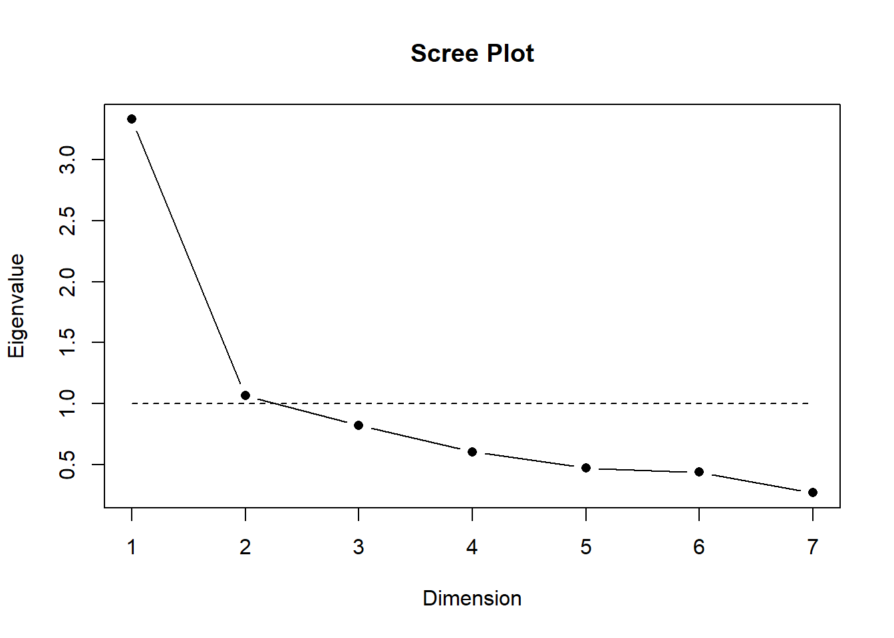

pacman::p_load(tidyverse, #Conjunto de paquetes, sobre todo dplyr y ggplot2
car, #Para recodificar
haven,
summarytools, #Para descriptivos
sjmisc,
psych, # para Alfa de Chronbach
sjPlot,
psy, # scree plot function
nFactors, # parallel
sjlabelled)
options(scipen = 999) # para desactivar notacion cientifica
rm(list = ls()) # para limpiar el entorno de trabajotaller-afe
Análisis factorial exploratorio (AFE)
Presentación
Para el taller práctico de hoy utilizaremos la base de datos del Estudio Longitudinal Social de Chile, realizado por el Centro de estudios del conflicto y la cohesión social COES.
El Estudio Longitudinal Social del Chile ELSOC, único en Chile y América Latina, consiste en encuestar a casi 3.000 chilenos, anualmente, a lo largo de una década. ELSOC ha sido diseñado para evaluar la manera cómo piensan, sienten y se comportan los chilenos en torno a un conjunto de temas referidos al conflicto y la cohesión social en Chile. La población objetivo son hombres y mujeres entre 15 y 75 años de edad, tiene una representación de la población nacional urbana, donde se obtuvo una muestra original de 2927 casos en el año 2016 y mantiene 1728 en 2022, además de una muestra de refresco en 2018.
Objetivo general
El objetivo de este ejercicio práctico es comprender y estimar un análisis factorial exploratorio con el fin de reducir la dimensionalidad de una batería de variables.
Cargar paquetes
Cargar base de datos
load(url("https://dataverse.harvard.edu/api/access/datafile/7245118")) #Cargar base de datosVisualización de datos
dim(elsoc_long_2016_2022.2)[1] 18035 750Debido a la naturaleza longitudinal de ELSOC, la base de datos contiene 18035 casos (las mismas personas durante 6 años) y 750 variables (las mismas variables en 6 periodos distintos). Por lo tanto, para simplificar el proceso de análisis de este práctico trabajaremos solo con los casos y variables de quienes participaron en la cuarta ola (2019)
Datos y variables
Para estimar AFE, utilizaremos específicamente el módulo de Ciudadanía. De este módulo utilizaremos un concepto en particular llamado Confianza en instituciones con los ítems:
Grado de confianza: El Gobierno
Grado de confianza: Los Partidos políticos
Grado de confianza: Carabineros
Grado de confianza: Los sindicatos
Grado de confianza: Las empresas privadas
Grado de confianza: El congreso nacional
Grado de confianza: El presidente de la república
La idea general es ver si esque todas estas variables miden algún tipo de confianza o si esque existen dimensiones subyacentes.
Asimismo, vamos a utilizar los promedios y/o puntajes de estas variables para ver cómo influyen en la Satisfacción con la democracia en Chile
Filtrar base de datos
Filtraremos la base de datos para quedarnos con las observaciones correspondientes solamente a la ola 4, y además seleccionaremos los ítems de interés.
data <- elsoc_long_2016_2022.2 %>% filter(ola==4) %>% # seleccionamos solo los casos de la ola 1
select(satis_dem = c01,
conf_gob = c05_01,
conf_part = c05_02,
conf_carab = c05_03,
conf_sind = c05_04,
conf_empre = c05_06,
conf_cong = c05_07,
conf_pres = c05_08,
)Estos ítems cuentan con las mismas categorías de respuesta: (1) Nada, a (5) Mucho. Además de los valores codificados como -888 y -999.
Recodificar
Recodificamos los valores -888 y -999 en NA y eliminamos los NAs.
data$satis_dem <- car::recode(data$satis_dem, "c(-999,-888)=NA")
data$conf_gob <- car::recode(data$conf_gob, "c(-999,-888)=NA")
data$conf_part <- car::recode(data$conf_part, "c(-999,-888)=NA")
data$conf_carab <- car::recode(data$conf_carab, "c(-999,-888)=NA")
data$conf_sind <- car::recode(data$conf_sind, "c(-999,-888)=NA")
data$conf_empre <- car::recode(data$conf_empre, "c(-999,-888)=NA")
data$conf_cong <- car::recode(data$conf_cong, "c(-999,-888)=NA")
data$conf_pres <- car::recode(data$conf_pres, "c(-999,-888)=NA")
data$conf_gob <- set_labels(data$conf_gob,
labels=c( "Nada"=1,
"Poca"=2,
"Algo"=3,
"Bastante"=4,
"Mucha"=5))
data$conf_part <- set_labels(data$conf_part,
labels=c( "Nada"=1,
"Poca"=2,
"Algo"=3,
"Bastante"=4,
"Mucha"=5))
data$conf_carab <- set_labels(data$conf_carab,
labels=c( "Nada"=1,
"Poca"=2,
"Algo"=3,
"Bastante"=4,
"Mucha"=5))
data$conf_sind <- set_labels(data$conf_sind,
labels=c( "Nada"=1,
"Poca"=2,
"Algo"=3,
"Bastante"=4,
"Mucha"=5))
data$conf_empre <- set_labels(data$conf_empre,
labels=c( "Nada"=1,
"Poca"=2,
"Algo"=3,
"Bastante"=4,
"Mucha"=5))
data$conf_cong <- set_labels(data$conf_cong,
labels=c( "Nada"=1,
"Poca"=2,
"Algo"=3,
"Bastante"=4,
"Mucha"=5))
data$conf_pres <- set_labels(data$conf_pres,
labels=c( "Nada"=1,
"Poca"=2,
"Algo"=3,
"Bastante"=4,
"Mucha"=5))Análisis
data %>% select(conf_gob:conf_pres) %>%
plot_stackfrq() + theme(legend.position="bottom")Estimar correlación
data %>% select(conf_gob:conf_pres) %>% tab_corr(triangle = "lower")| Grado de confianza: El Gobierno | Grado de confianza: Los Partidos Politicos |
Grado de confianza: Carabineros | Grado de confianza: Los Sindicatos | Grado de confianza: Las Empresas Privadas |
Grado de confianza: El Congreso Nacional | Grado de confianza: El Presidente/a de la Republica |
|
| Grado de confianza: El Gobierno | |||||||
| Grado de confianza: Los Partidos Politicos |
0.451*** | ||||||
| Grado de confianza: Carabineros | 0.517*** | 0.232*** | |||||
| Grado de confianza: Los Sindicatos | 0.175*** | 0.280*** | 0.201*** | ||||
| Grado de confianza: Las Empresas Privadas |
0.417*** | 0.291*** | 0.409*** | 0.317*** | |||
| Grado de confianza: El Congreso Nacional | 0.470*** | 0.523*** | 0.321*** | 0.331*** | 0.450*** | ||
| Grado de confianza: El Presidente/a de la Republica |
0.719*** | 0.355*** | 0.524*** | 0.127*** | 0.378*** | 0.442*** | |
| Computed correlation used pearson-method with listwise-deletion. | |||||||
Podemos observar que todas las correlaciones son positivas, por lo que no quedaron ítems invertidos.
data %>% select(conf_gob:conf_pres) %>% psych::alpha()
Reliability analysis
Call: psych::alpha(x = .)
raw_alpha std.alpha G6(smc) average_r S/N ase mean sd median_r
0.79 0.81 0.81 0.37 4.2 0.0055 1.8 0.63 0.37
95% confidence boundaries
lower alpha upper
Feldt 0.78 0.79 0.8
Duhachek 0.78 0.79 0.8
Reliability if an item is dropped:
raw_alpha std.alpha G6(smc) average_r S/N alpha se var.r med.r
conf_gob 0.73 0.76 0.75 0.34 3.1 0.0070 0.013 0.32
conf_part 0.77 0.79 0.79 0.38 3.7 0.0060 0.023 0.41
conf_carab 0.76 0.78 0.79 0.38 3.6 0.0064 0.021 0.37
conf_sind 0.80 0.82 0.82 0.43 4.5 0.0049 0.013 0.44
conf_empre 0.75 0.78 0.79 0.37 3.6 0.0064 0.026 0.35
conf_cong 0.75 0.77 0.77 0.36 3.3 0.0064 0.024 0.35
conf_pres 0.74 0.77 0.76 0.36 3.3 0.0068 0.012 0.32
Item statistics
n raw.r std.r r.cor r.drop mean sd
conf_gob 3405 0.78 0.78 0.77 0.67 1.6 0.87
conf_part 3394 0.58 0.65 0.56 0.48 1.3 0.57
conf_carab 3409 0.73 0.67 0.59 0.54 2.4 1.25
conf_sind 3253 0.53 0.51 0.37 0.31 2.1 1.09
conf_empre 3339 0.69 0.68 0.59 0.55 1.9 0.97
conf_cong 3382 0.70 0.74 0.68 0.59 1.4 0.71
conf_pres 3399 0.75 0.74 0.72 0.62 1.6 0.92
Non missing response frequency for each item
1 2 3 4 5 miss
conf_gob 0.60 0.24 0.13 0.03 0.01 0.00
conf_part 0.79 0.16 0.04 0.01 0.00 0.01
conf_carab 0.32 0.23 0.23 0.15 0.07 0.00
conf_sind 0.42 0.23 0.25 0.09 0.02 0.05
conf_empre 0.45 0.28 0.21 0.05 0.01 0.02
conf_cong 0.68 0.21 0.09 0.01 0.00 0.01
conf_pres 0.65 0.18 0.12 0.03 0.01 0.01Si sacamos conf_sind el alpha sube a 0.8
data %>% select(conf_gob:conf_carab, conf_empre:conf_pres) %>% psych::alpha()
Reliability analysis
Call: psych::alpha(x = .)
raw_alpha std.alpha G6(smc) average_r S/N ase mean sd median_r
0.8 0.82 0.82 0.43 4.5 0.0049 1.7 0.65 0.44
95% confidence boundaries
lower alpha upper
Feldt 0.79 0.8 0.81
Duhachek 0.79 0.8 0.81
Reliability if an item is dropped:
raw_alpha std.alpha G6(smc) average_r S/N alpha se var.r med.r
conf_gob 0.74 0.76 0.74 0.39 3.2 0.0066 0.0088 0.39
conf_part 0.80 0.81 0.79 0.46 4.3 0.0053 0.0118 0.44
conf_carab 0.79 0.80 0.79 0.44 4.0 0.0055 0.0136 0.44
conf_empre 0.79 0.81 0.80 0.45 4.1 0.0054 0.0177 0.46
conf_cong 0.78 0.79 0.77 0.43 3.7 0.0056 0.0187 0.41
conf_pres 0.75 0.77 0.75 0.40 3.4 0.0065 0.0088 0.42
Item statistics
n raw.r std.r r.cor r.drop mean sd
conf_gob 3405 0.82 0.82 0.80 0.71 1.6 0.87
conf_part 3394 0.57 0.65 0.54 0.46 1.3 0.57
conf_carab 3409 0.76 0.69 0.60 0.56 2.4 1.25
conf_empre 3339 0.69 0.67 0.56 0.51 1.9 0.97
conf_cong 3382 0.69 0.73 0.66 0.57 1.4 0.71
conf_pres 3399 0.80 0.78 0.76 0.68 1.6 0.92
Non missing response frequency for each item
1 2 3 4 5 miss
conf_gob 0.60 0.24 0.13 0.03 0.01 0.00
conf_part 0.79 0.16 0.04 0.01 0.00 0.01
conf_carab 0.32 0.23 0.23 0.15 0.07 0.00
conf_empre 0.45 0.28 0.21 0.05 0.01 0.02
conf_cong 0.68 0.21 0.09 0.01 0.00 0.01
conf_pres 0.65 0.18 0.12 0.03 0.01 0.01data <- cbind(data,
"conf_inst"=rowMeans(data %>%
dplyr::select(conf_gob:conf_carab, conf_empre:conf_pres),
na.rm=TRUE))
summary(data$conf_inst) Min. 1st Qu. Median Mean 3rd Qu. Max. NA's
1.000 1.167 1.500 1.700 2.167 5.000 6 Análisis factorial exploratorio
¿Qué se puede deducir de la matriz de correlaciones en relación a la estructura subyacente en términos de variables latentes? No hay claridad de grupos de indicadores asociados entre sí.
Test de adecuación de matriz para AFE
KMO (Kaiser, Meyer, Olkin Measure of Sampling Adequacy):
Varía entre 0 y 1. Contrasta si las correlaciones parciales entre las variables son pequeñas
Valores pequeños (menores a 0.5) indican que los datos no serían adecuados para AFE, ya que las correlaciones entre pares de variables no pueden ser explicadas por otras variables.
corMat <- data %>% select(conf_gob:conf_pres) %>%
cor(use = "complete.obs") # estimar matriz pearson
KMO(corMat)Kaiser-Meyer-Olkin factor adequacy
Call: KMO(r = corMat)
Overall MSA = 0.81
MSA for each item =
conf_gob conf_part conf_carab conf_sind conf_empre conf_cong conf_pres
0.78 0.81 0.86 0.80 0.86 0.83 0.77 En este caso las correlaciones son altas, por lo que los datos sí son adecuados para AFE.
Nivel de correlaciones de la matriz: test de esfericidad de Barlett
Se utiliza para evluar la hipótesis que la matriz de correlaciones es una matriz identidad (diagonal=1 y bajo la diagonal=0)
- Se busca significación (p < 0.05) ya que se espera que las variables estén correlacionadas
cortest.bartlett(corMat, n = 3417)$chisq
[1] 7942.816
$p.value
[1] 0
$df
[1] 21En este caso el valor p es 0, así que hay significación estadística
Selección de número de factores
data %>% select(conf_gob:conf_pres) %>% scree.plot()
fa.parallel(corMat, n.obs=3417)Parallel analysis suggests that the number of factors = 3 and the number of components = 2 Extracción
- ejes principales
fac_pa <- data %>% select(conf_gob:conf_pres) %>% fa(nfactors = 3, fm= "pa")Loading required namespace: GPArotation#summary(fac_pa)
fac_paFactor Analysis using method = pa
Call: fa(r = ., nfactors = 3, fm = "pa")
Standardized loadings (pattern matrix) based upon correlation matrix
PA1 PA2 PA3 h2 u2 com
conf_gob 0.77 0.14 0.00 0.72 0.28 1.1
conf_part 0.07 0.72 -0.04 0.55 0.45 1.0
conf_carab 0.52 -0.13 0.32 0.45 0.55 1.8
conf_sind -0.19 0.29 0.42 0.27 0.73 2.2
conf_empre 0.14 0.07 0.59 0.50 0.50 1.1
conf_cong 0.12 0.53 0.23 0.55 0.45 1.5
conf_pres 0.87 0.00 -0.02 0.74 0.26 1.0
PA1 PA2 PA3
SS loadings 1.84 1.08 0.87
Proportion Var 0.26 0.15 0.12
Cumulative Var 0.26 0.42 0.54
Proportion Explained 0.48 0.29 0.23
Cumulative Proportion 0.48 0.77 1.00
With factor correlations of
PA1 PA2 PA3
PA1 1.00 0.51 0.48
PA2 0.51 1.00 0.44
PA3 0.48 0.44 1.00
Mean item complexity = 1.4
Test of the hypothesis that 3 factors are sufficient.
df null model = 21 with the objective function = 2.3 with Chi Square = 7858.1
df of the model are 3 and the objective function was 0.01
The root mean square of the residuals (RMSR) is 0.01
The df corrected root mean square of the residuals is 0.03
The harmonic n.obs is 3337 with the empirical chi square 12.76 with prob < 0.0052
The total n.obs was 3417 with Likelihood Chi Square = 39.13 with prob < 0.000000016
Tucker Lewis Index of factoring reliability = 0.968
RMSEA index = 0.059 and the 90 % confidence intervals are 0.044 0.077
BIC = 14.72
Fit based upon off diagonal values = 1
Measures of factor score adequacy
PA1 PA2 PA3
Correlation of (regression) scores with factors 0.93 0.84 0.79
Multiple R square of scores with factors 0.86 0.71 0.62
Minimum correlation of possible factor scores 0.72 0.43 0.25- Maximum likelihood
Maximiza la posibilidad de que los parámetros reproduzcan los datos observados
fac_ml <- data %>% select(conf_gob:conf_pres) %>% fa(nfactors = 3, fm= "ml")
fac_mlFactor Analysis using method = ml
Call: fa(r = ., nfactors = 3, fm = "ml")
Standardized loadings (pattern matrix) based upon correlation matrix
ML1 ML2 ML3 h2 u2 com
conf_gob 0.77 0.13 0.02 0.72 0.28 1.1
conf_part 0.05 0.78 -0.01 0.64 0.36 1.0
conf_carab 0.51 -0.12 0.29 0.43 0.57 1.7
conf_sind -0.19 0.24 0.46 0.27 0.73 1.9
conf_empre 0.11 0.00 0.66 0.53 0.47 1.1
conf_cong 0.14 0.44 0.30 0.52 0.48 2.0
conf_pres 0.88 -0.01 -0.03 0.75 0.25 1.0
ML1 ML2 ML3
SS loadings 1.83 1.02 1.00
Proportion Var 0.26 0.15 0.14
Cumulative Var 0.26 0.41 0.55
Proportion Explained 0.47 0.27 0.26
Cumulative Proportion 0.47 0.74 1.00
With factor correlations of
ML1 ML2 ML3
ML1 1.00 0.48 0.52
ML2 0.48 1.00 0.45
ML3 0.52 0.45 1.00
Mean item complexity = 1.4
Test of the hypothesis that 3 factors are sufficient.
df null model = 21 with the objective function = 2.3 with Chi Square = 7858.1
df of the model are 3 and the objective function was 0.01
The root mean square of the residuals (RMSR) is 0.01
The df corrected root mean square of the residuals is 0.03
The harmonic n.obs is 3337 with the empirical chi square 14.35 with prob < 0.0025
The total n.obs was 3417 with Likelihood Chi Square = 35.46 with prob < 0.000000097
Tucker Lewis Index of factoring reliability = 0.971
RMSEA index = 0.056 and the 90 % confidence intervals are 0.041 0.074
BIC = 11.05
Fit based upon off diagonal values = 1
Measures of factor score adequacy
ML1 ML2 ML3
Correlation of (regression) scores with factors 0.93 0.85 0.82
Multiple R square of scores with factors 0.86 0.73 0.67
Minimum correlation of possible factor scores 0.72 0.45 0.34Casi automático con sjPlot
data %>% select(conf_gob:conf_pres) %>% sjPlot::tab_fa(method = "ml", rotation = "promax", show.comm = TRUE, title = "Análisis factorial de confianza en instituciones")Parallel analysis suggests that the number of factors = 3 and the number of components = NA | Factor 1 | Factor 2 | Factor 3 | Communality | |
| Grado de confianza: El Gobierno | 0.80 | 0.19 | -0.09 | 0.72 |
| Grado de confianza: Los Partidos Politicos |
0.03 | 0.78 | 0.01 | 0.64 |
| Grado de confianza: Carabineros | 0.57 | -0.14 | 0.23 | 0.43 |
| Grado de confianza: Los Sindicatos | -0.15 | 0.13 | 0.51 | 0.27 |
| Grado de confianza: Las Empresas Privadas |
0.19 | -0.12 | 0.67 | 0.53 |
| Grado de confianza: El Congreso Nacional | 0.17 | 0.39 | 0.30 | 0.52 |
| Grado de confianza: El Presidente/a de la Republica |
0.91 | 0.07 | -0.16 | 0.75 |
| Total Communalities | 3.85 | |||
| Cronbach's α | 0.78 | 0.67 | 0.48 | |
Luego de realizar el Análisis factorial exploratorio existen varias alternativas sobre los pasos a seguir. Por ejemplo, es posible estimar un promedio simple entre cada una de las variables de los factores. Otra opción es estimar puntajes factoriales.
Puntajes factoriales
fac_ml <- data %>% select(conf_gob:conf_pres) %>% fa(nfactors = 3, fm= "ml", rotate = "promax", scores = "regression")
fac_mlFactor Analysis using method = ml
Call: fa(r = ., nfactors = 3, rotate = "promax", scores = "regression",
fm = "ml")
Standardized loadings (pattern matrix) based upon correlation matrix
ML1 ML2 ML3 h2 u2 com
conf_gob 0.80 0.19 -0.09 0.72 0.28 1.1
conf_part 0.03 0.78 0.01 0.64 0.36 1.0
conf_carab 0.57 -0.14 0.23 0.43 0.57 1.4
conf_sind -0.15 0.13 0.51 0.27 0.73 1.3
conf_empre 0.19 -0.12 0.67 0.53 0.47 1.2
conf_cong 0.17 0.39 0.30 0.52 0.48 2.3
conf_pres 0.91 0.07 -0.16 0.75 0.25 1.1
ML1 ML2 ML3
SS loadings 1.98 0.96 0.92
Proportion Var 0.28 0.14 0.13
Cumulative Var 0.28 0.42 0.55
Proportion Explained 0.51 0.25 0.24
Cumulative Proportion 0.51 0.76 1.00
With factor correlations of
ML1 ML2 ML3
ML1 1.00 0.48 0.57
ML2 0.48 1.00 0.56
ML3 0.57 0.56 1.00
Mean item complexity = 1.4
Test of the hypothesis that 3 factors are sufficient.
df null model = 21 with the objective function = 2.3 with Chi Square = 7858.1
df of the model are 3 and the objective function was 0.01
The root mean square of the residuals (RMSR) is 0.01
The df corrected root mean square of the residuals is 0.03
The harmonic n.obs is 3337 with the empirical chi square 14.35 with prob < 0.0025
The total n.obs was 3417 with Likelihood Chi Square = 35.46 with prob < 0.000000097
Tucker Lewis Index of factoring reliability = 0.971
RMSEA index = 0.056 and the 90 % confidence intervals are 0.041 0.074
BIC = 11.05
Fit based upon off diagonal values = 1
Measures of factor score adequacy
ML1 ML2 ML3
Correlation of (regression) scores with factors 0.93 0.85 0.83
Multiple R square of scores with factors 0.87 0.72 0.69
Minimum correlation of possible factor scores 0.74 0.45 0.38data <- cbind(data, fac_ml$scores)data %>% select(conf_inst, ML1, ML2, ML3) %>% head(10) conf_inst ML1 ML2 ML3
1 1.000000 -0.8382387 -0.4724225 -0.7851196
2 1.333333 -0.5980196 -0.6372386 -0.7486267
3 1.000000 -0.8356784 -0.5480919 -0.9833033
4 2.833333 2.1363615 0.1859941 0.9509994
5 1.166667 -0.7238739 -0.5542404 -0.5297908
6 1.000000 -0.8356784 -0.5480919 -0.9833033
7 1.000000 -0.8356784 -0.5480919 -0.9833033
8 1.666667 -0.4275077 0.2577645 0.6781084
9 1.000000 -0.8356784 -0.5480919 -0.9833033
10 1.333333 -0.5980196 -0.6372386 -0.7486267Factor 1
summary(data$ML1) Min. 1st Qu. Median Mean 3rd Qu. Max. NA's
-0.84894 -0.72453 -0.38400 -0.01872 0.50205 3.94763 222 Factor 2
summary(data$ML2) Min. 1st Qu. Median Mean 3rd Qu. Max. NA's
-0.75098 -0.54809 -0.40290 -0.00971 0.16165 5.39270 222 Factor 3
summary(data$ML3) Min. 1st Qu. Median Mean 3rd Qu. Max. NA's
-1.1852 -0.7486 -0.1423 -0.0131 0.5225 3.7504 222 Renombramos los factores para darle más sentido a la interpretación
data<- data %>% rename(inst_ejecutivo=ML1,
inst_partidos=ML2,
inst_trabajo=ML3)Ahora probar cada uno de estos puntajes en un modelo de regresión
data<-na.omit(data)
reg1 <- lm(satis_dem~conf_inst, data=data)
reg2 <- lm(satis_dem~inst_ejecutivo, data=data)
reg3 <- lm(satis_dem~inst_partidos, data=data)
reg4 <- lm(satis_dem~inst_trabajo, data=data)
reg5 <- lm(satis_dem~inst_ejecutivo+inst_partidos+inst_trabajo, data=data)texreg::knitreg(list(reg1, reg2, reg3, reg4, reg5))| Model 1 | Model 2 | Model 3 | Model 4 | Model 5 | |
|---|---|---|---|---|---|
| (Intercept) | 0.68*** | 1.70*** | 1.70*** | 1.70*** | 1.70*** |
| (0.04) | (0.01) | (0.02) | (0.02) | (0.01) | |
| conf_inst | 0.61*** | ||||
| (0.02) | |||||
| inst_ejecutivo | 0.42*** | 0.34*** | |||
| (0.02) | (0.02) | ||||
| inst_partidos | 0.39*** | 0.17*** | |||
| (0.02) | (0.03) | ||||
| inst_trabajo | 0.37*** | -0.02 | |||
| (0.02) | (0.03) | ||||
| R2 | 0.18 | 0.18 | 0.13 | 0.11 | 0.20 |
| Adj. R2 | 0.18 | 0.18 | 0.13 | 0.11 | 0.20 |
| Num. obs. | 3134 | 3134 | 3134 | 3134 | 3134 |
| ***p < 0.001; **p < 0.01; *p < 0.05 | |||||